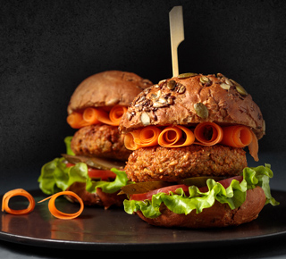

وبلاگ

برنج قهوه ای ظهور سلامت

تاکو مکزیکی

بهترین دمنوش آرامش بخش

آجیل پلو

اگر دوست دارید که یک برگر گیاهی و کاملاً سالم داشته باشید برگر
عدس یک انتخاب مناسب برای شماست. عدس سرشار از پروتئین است و
ادامه مطلب
برگر عدس

باندنت کیک شکلاتی

آش انار

رولت مرغ

استیک با سس قارچ

ماکارونی با سبزیجات

سوپ مکزیکی